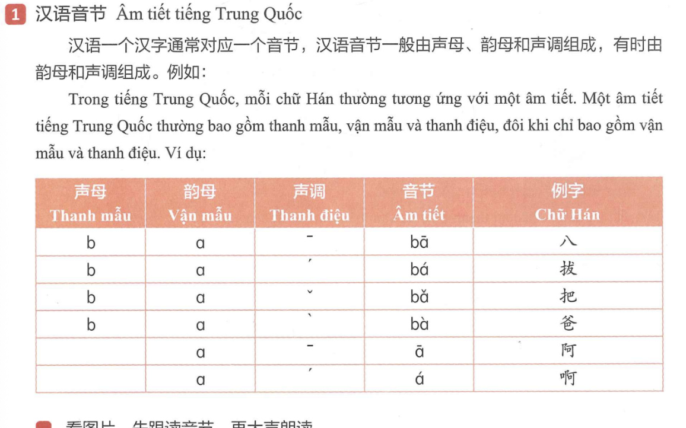
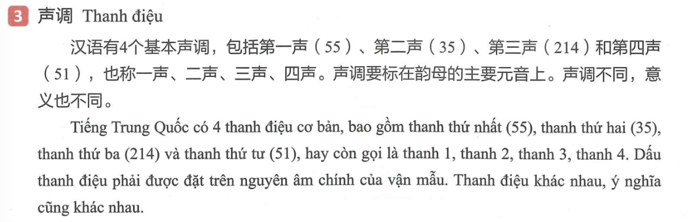
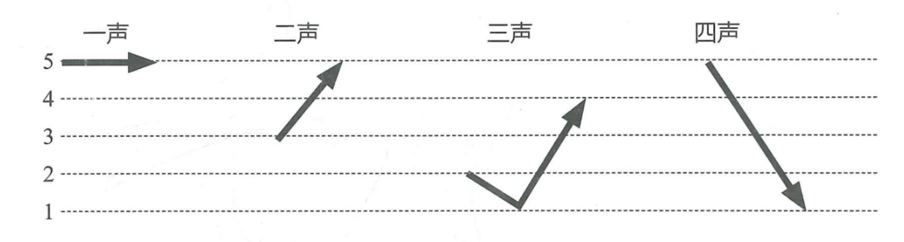
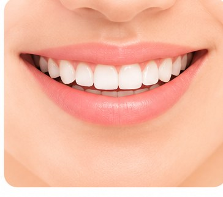
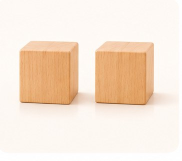
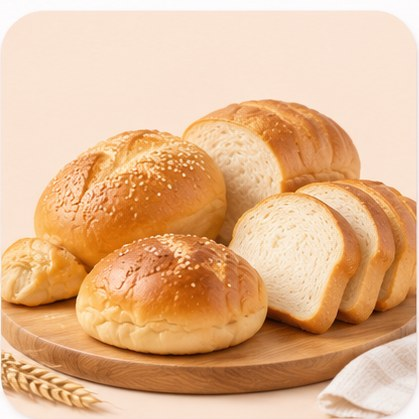
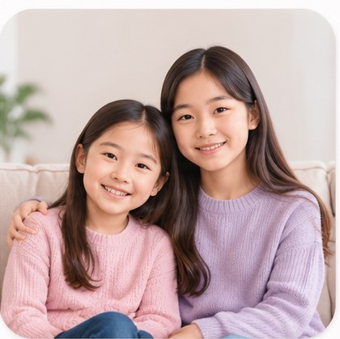
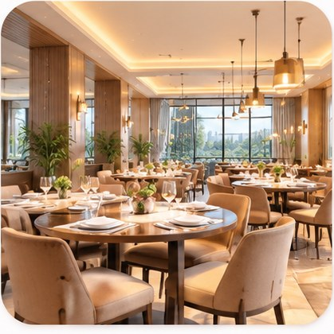

VÍ DỤ 1 · ÂM TIẾT
Thanh mẫu + vận mẫu + thanh điệu
bThanh mẫu+aVận mẫu+ˉThanh điệu→bā · 八
Bảng trong giáo trình cho thấy cùng b + a có thể tạo thành bā、bá、bǎ、bà; khi không có thanh mẫu, vận mẫu a cũng có thể tạo âm tiết ā、á.
VÍ DỤ HÌNH ẢNH · PHẦN 1
Nhìn Pinyin và chữ Hán, nghe mẫu rồi đọc to từng âm tiết.
chá茶Trà
gǒu狗Chó
māo猫Mèo
cài菜Rau
bēizi杯子Cốc
xuésheng学生Học sinh
lǎoshī老师Giáo viên
jīdàn鸡蛋Trứng


VÍ DỤ ĐỌC · THANH ĐIỆU
Nghe mẫu, đọc từng cột theo bốn thanh điệu
Các ví dụ dưới đây được giữ theo hình trong giáo trình. Đọc từ trái sang phải và chú ý dấu thanh trên nguyên âm.
aāáǎà
eēéěè
er—érěrèr
dǎdǎdádǎdà
kēkēkékěkè
第一声 · ˉ第二声 · ˊ第三声 · ˇ第四声 · ˋ
VÍ DỤ HÌNH ẢNH · PHẦN 3
Xem hình, nghe mẫu và nhắc lại Pinyin cùng chữ Hán.

kǒu口Miệng
fàn饭Cơm
hē喝Uống

èr二Số hai
nǐ hǎo你好Xin chào
péngyou朋友Bạn bè

miànbāo面包Bánh mì

mèimei妹妹Em gái
fángjiān房间Phòng
báitiān白天Ban ngày

fàndiàn饭店Nhà hàng
diànnǎo电脑Máy tính